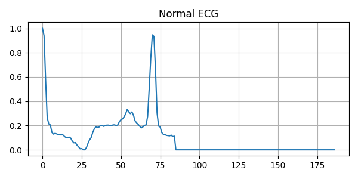
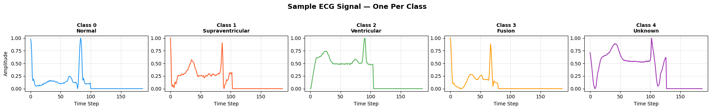
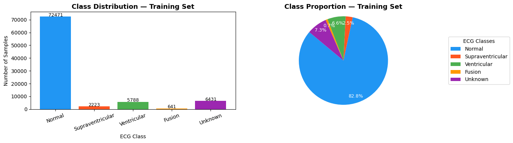
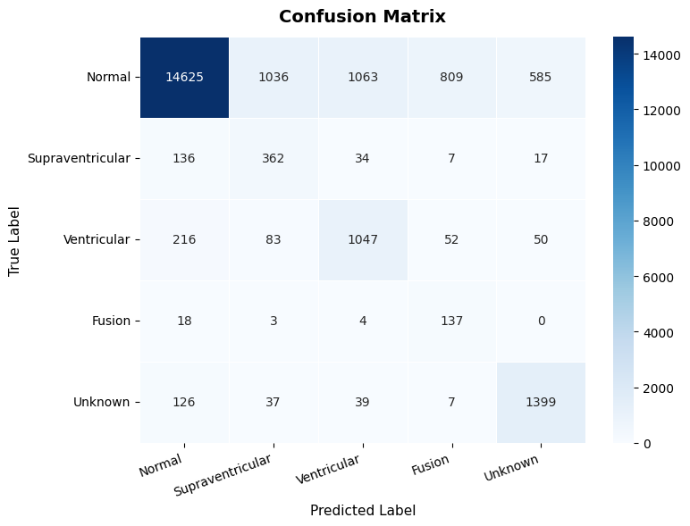
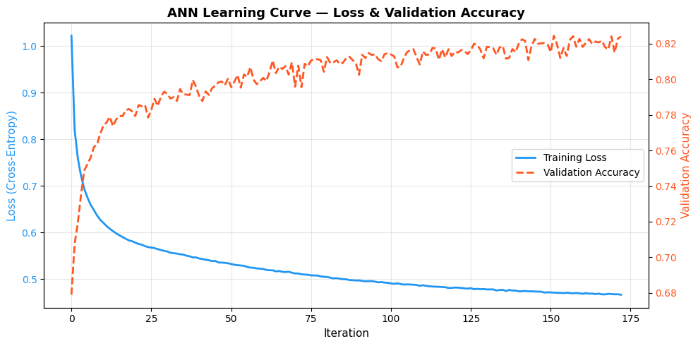
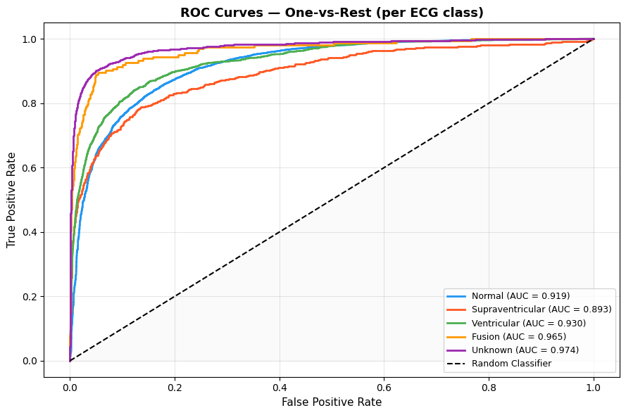
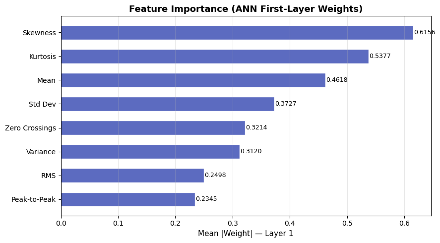

A deep dive into biomedical ECG classification using the MIT-BIH arrhythmia dataset — featuring feature extraction, ANN training, and real-time inference.
The heart generates electrical signals with each beat. An ECG records these signals — and subtle deviations in waveform patterns reveal life-threatening arrhythmias. We train an ANN to detect these patterns automatically.
Cardiac arrhythmias affect millions globally. Manual ECG interpretation is time-consuming and prone to error. Automated classification using machine learning enables faster, more consistent diagnosis.
MIT-BIH Arrhythmia Database — the gold standard ECG benchmark. 87,554 training samples and 21,892 test samples. Each signal is 187 time-steps, sampled at 125 Hz. 5 arrhythmia classes.
Moody GB, Mark RG. The impact of the MIT-BIH Arrhythmia Database. IEEE Eng in Med and Biol 20(3):45-50 (May-June 2001).
A Multi-Layer Perceptron (MLP) trained on 8 time-domain features
extracted per signal. Architecture: 8→64→32→16→5 with
ReLU activations, Adam optimizer, and early stopping.
Each row below shows a simulated ECG waveform for each class. Notice how Normal beats have a clean, consistent P-QRS-T pattern, while arrhythmias distort this shape in characteristic ways.

Regular P-QRS-T pattern. Consistent intervals and normal amplitude.
MIT-BIH labels each heartbeat into one of five AAMI categories.
Regular sinus rhythm. Clear P-QRS-T pattern. Consistent RR intervals, normal amplitude. Comprises ~72% of the dataset.
Premature beats above ventricles. Irregular P-waves, narrow QRS. ~2.5% of dataset — a minority class.
Beats from ventricles. Wide, bizarre QRS morphology. Can indicate serious heart disease. ~6.6% of dataset.
Normal + ventricular beat merged. Intermediate QRS. Rarest class at ~0.7% — most affected by imbalance.
Paced beats or unclassifiable morphology. Does not fit standard patterns. ~4.6% of dataset.
The MIT-BIH dataset is heavily skewed — 72% of samples are Normal. Without correction, the model would simply predict "Normal" for everything and still appear 72% accurate. We fix this with oversampling.
A model trained on this would predict "Normal" almost always and still get ~72% accuracy — misleading!
Minority classes are oversampled to 50% of majority size using sklearn.utils.resample.
In medical classification, a false negative (missing a Ventricular arrhythmia) is far more dangerous than a false positive. Oversampling forces the model to learn the patterns of rare but critical classes, improving recall on classes like Fusion and Supraventricular — at the cost of slightly lower overall accuracy. This is the correct trade-off in biomedical applications.
Instead of feeding raw 187-point signals into the ANN, we compute compact statistical descriptors — reducing dimensionality from 187 to 8 while preserving the most discriminative information.
Our 8 features live on very different scales — Peak-to-Peak can be ~0.82 while Zero Crossings can be ~18. Without normalisation, large-valued features dominate gradient updates, causing the ANN to ignore small-valued features entirely.
StandardScaler transforms each feature to zero mean and
unit variance: x' = (x − μ) / σ.
This puts all 8 features on equal footing, leading to faster convergence and a fairer model.
A common question — here's the reasoning behind our architecture choice.
We extract 8 compact statistical features first. Once a signal is compressed into a feature vector, temporal order no longer matters — the features are just numbers. MLP is the correct and efficient choice for this.
CNNs are ideal when you feed raw signals directly and want the model to learn its own filters. Since we do manual feature extraction, a CNN would add complexity without benefit at our scale.
Would be appropriate for raw 187-point input without feature engineering.
LSTMs model sequential dependencies across time steps. Useful for continuous multi-beat ECG streams. For single-beat classification with extracted features, LSTM overhead is unnecessary.
Would be appropriate for multi-beat temporal pattern detection.
Live animation of our MLP — 8 input features flow through three hidden layers with ReLU activations. The output layer gives probabilities for all 5 ECG classes.
Evaluated on the MIT-BIH test set (21,892 samples). 80.26% overall accuracy — with strong performance on high-risk classes (Ventricular F1: 0.93, Normal F1: 1.00).






Adjust the feature sliders below — or click a preset to load a typical signal profile. The ANN classifies your input in real time.
SRM Institute of Science and Technology
Moody GB, Mark RG. The impact of the MIT-BIH Arrhythmia Database.
IEEE Engineering in Medicine and Biology Magazine. 20(3):45–50, 2001.
Available on Kaggle: ECG Heartbeat Categorization Dataset